Materialpaket Lesespurgeschichten Physik Klasse 8 – Elektrizität, Magnetismus und Optik: 10 Lesespuren mit Rätselaufgaben, dreifach differenziert

Materialpaket Lesespurgeschichten Physik Klasse 8 – Wärme und Energie: 12 Lesespuren mit Rätselaufgaben, dreifach differenziert
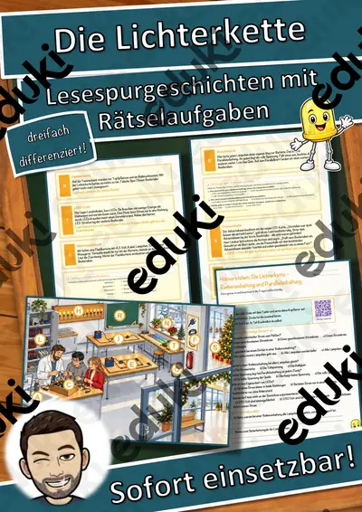
Lesespur: Die Lichterkette: Reihenschaltung und Parallelschaltung – Lesespurgeschichte mit Rätseln (Klasse 8)

Lesespur: Polarlichter: wenn der Himmel grün leuchtet – Lesespurgeschichte mit Rätseln (Klasse 8)

Lesespur: Das Zeitlabor: wie Uhren die Zeit messen und warum wir umstellen – Lesespurgeschichte mit Rätseln (Klasse 8)

Lesespur: Der Satellit – Lesespurgeschichte mit Rätseln (Klasse 8)

Lesespur: Das Echolot – Lesespurgeschichte mit Rätseln (Klasse 8)

Lesespur: Der Winterreifen – Lesespurgeschichte mit Rätseln (Klasse 8)

Lesespur: Der Nebel – Lesespurgeschichte mit Rätseln (Klasse 8)

Lesespur: Die Thermoskanne – Lesespurgeschichte mit Rätseln (Klasse 8)

Lesespur: Der Kran – Lesespurgeschichte mit Rätseln (Klasse 8)

Lesespur: Der Haartrockner – Lesespurgeschichte mit Rätseln (Klasse 8)

Lesespur: Der Baukran – Lesespurgeschichte mit Rätseln (Klasse 8)

Lesespur: Die Fahrradpumpe – Lesespurgeschichte mit Rätseln (Klasse 8)

Lesespur: Der Wasserkocher – Lesespurgeschichte mit Rätseln (Klasse 8)

Lesespur: Die Sanduhr – Lesespurgeschichte mit Rätseln (Klasse 8)

Lesespur: Die Taschenlampe – Lesespurgeschichte mit Rätseln (Klasse 8)

Lesespur: Die Blockflöte – Lesespurgeschichte mit Rätseln (Klasse 8)

Lesespur: Der Kompass – Lesespurgeschichte mit Rätseln (Klasse 8)

Lesespur: Das Thermometer – Lesespurgeschichte mit Rätseln (Klasse 8)
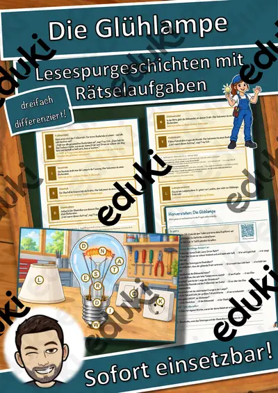
Lesespur: Die Glühlampe – Lesespurgeschichte mit Rätseln (Klasse 8)

Lesespur: Die Balkenwaage – Lesespurgeschichte mit Rätseln (Klasse 8)
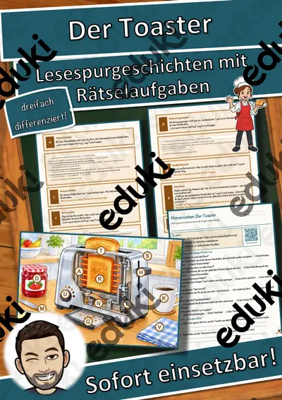
Lesespur: Der Toaster – Lesespurgeschichte mit Rätseln (Klasse 8)

Lesespur: Der Rauchmelder – Lesespurgeschichte mit Rätseln (Klasse 8)

Lesespur: Der Schnellkochtopf – Lesespurgeschichte mit Rätseln (Klasse 8)

Lesespur: Die Nähmaschine – Lesespurgeschichte mit Rätseln (Klasse 8)

Lesespur: Das Schiffshebewerk – Lesespurgeschichte mit Rätseln (Klasse 8)

Lesespur: Die Bogenbrücke – Lesespurgeschichte mit Rätseln (Klasse 8)

Lesespur: Die Zentralheizung – Lesespurgeschichte mit Rätseln (Klasse 8)

Lesespur: Die Klappbrücke – Lesespurgeschichte mit Rätseln (Klasse 8)

Lesespur: Der Backofen – Lesespurgeschichte mit Rätseln (Klasse 8)
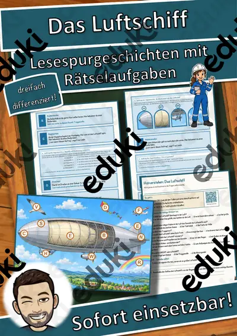
Lesespur: Das Luftschiff – Lesespurgeschichte mit Rätseln (Klasse 8)

Lesespur: Das Containerschiff – Lesespurgeschichte mit Rätseln (Klasse 8)

Lesespur: Die Hängebrücke – Lesespurgeschichte mit Rätseln (Klasse 8)

Lesespur: Die Rolltreppe – Lesespurgeschichte mit Rätseln (Klasse 8)

Lesespur: Der Fahrraddynamo – Lesespurgeschichte mit Rätseln (Klasse 8)

Lesespur: Der Kühlschrank – Lesespurgeschichte mit Rätseln (Klasse 8)

Lesespur: Der Staubsauger – Lesespurgeschichte mit Rätseln (Klasse 8)

Lesespur: Der Elektromotor – Lesespurgeschichte mit Rätseln (Klasse 8)

Lesespur: Das Teleskop – Lesespurgeschichte mit Rätseln (Klasse 8)

Lesespur: Der Fotoapparat – Lesespurgeschichte mit Rätseln (Klasse 8)

Lesespur: Die Waschmaschine – Lesespurgeschichte mit Rätseln (Klasse 8)
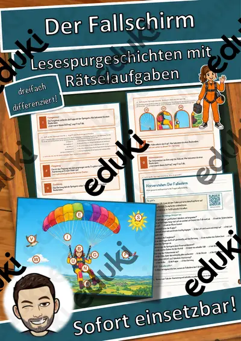
Lesespur: Der Fallschirm – Lesespurgeschichte mit Rätseln (Klasse 8)

Lesespur: Die Achterbahn – Lesespurgeschichte mit Rätseln (Klasse 8)
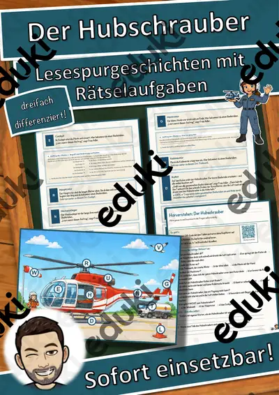
Lesespur: Der Hubschrauber – Lesespurgeschichte mit Rätseln (Klasse 8)

Lesespur: Das Segelschiff – Lesespurgeschichte mit Rätseln (Klasse 8)

Lesespur: Der Bagger – Lesespurgeschichte mit Rätseln (Klasse 8)
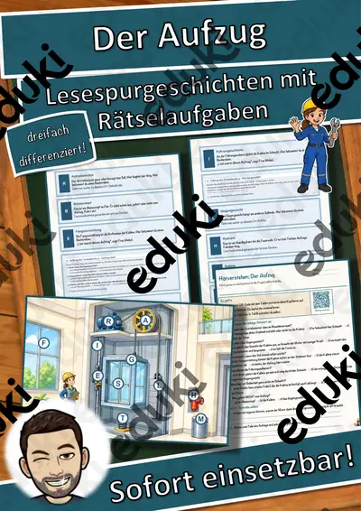
Lesespur: Der Aufzug – Lesespurgeschichte mit Rätseln (Klasse 8)

Lesespur: Das Flugzeug – Lesespurgeschichte mit Rätseln (Klasse 8)
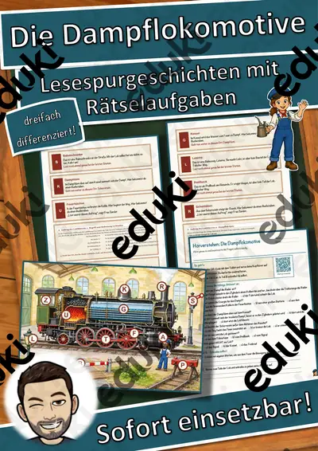
Lesespur: Die Dampflokomotive – Lesespurgeschichte mit Rätseln (Klasse 8)
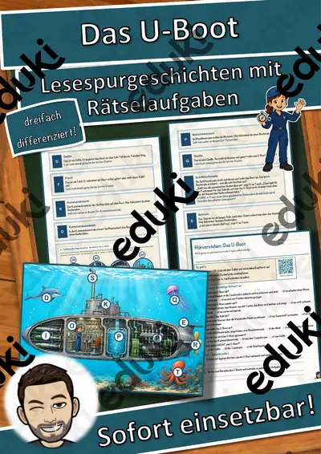
Lesespur: Das U-Boot – Lesespurgeschichte mit Rätseln (Klasse 8)

Lesespur: Das Mikroskop – Lesespurgeschichte mit Rätseln (Klasse 8)

Lesespur: Der Heißluftballon – Lesespurgeschichte mit Rätseln (Klasse 8)

Lesespur: Die Seilbahn – Lesespurgeschichte mit Rätseln (Klasse 8)

Lesespur: Der Turmdrehkran – Lesespurgeschichte mit Rätseln (Klasse 8)

Lesespur: Die Dampfmaschine – Lesespurgeschichte mit Rätseln (Klasse 8)
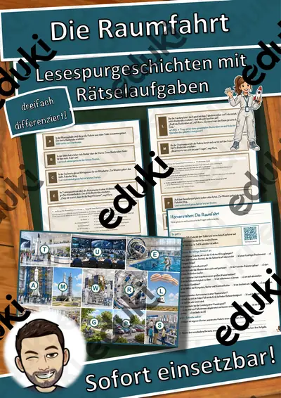
Lesespur: Die Raumfahrt – Lesespurgeschichte mit Rätseln (Klasse 8)

Materialpaket Prüfungstraining Physik Klasse 8 – Wärme, Licht, Schall und Elektrizität: 6 Übungshefte mit Prüfungsteil und Lösungen
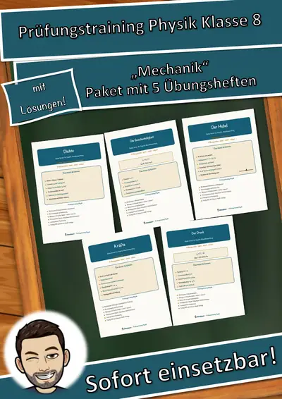
Materialpaket Prüfungstraining Physik Klasse 8 – Mechanik: 5 Übungshefte mit Prüfungsteil und Lösungen

Der Druck – Prüfungstraining Physik (Klasse 8)
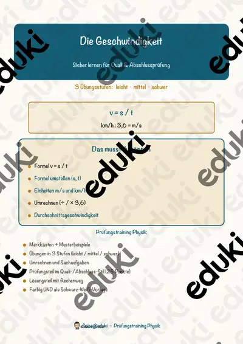
Die Geschwindigkeit – Prüfungstraining Physik (Klasse 8)

Der Stromkreis – Prüfungstraining Physik (Klasse 8)

Prüfungstraining Physik: Wärme und Temperatur (Klasse 8)
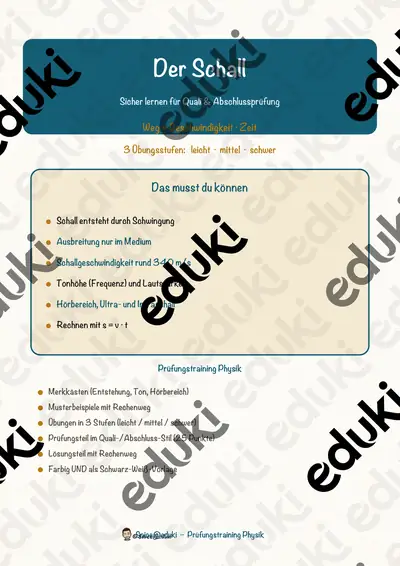
Der Schall – Prüfungstraining Physik (Klasse 8)
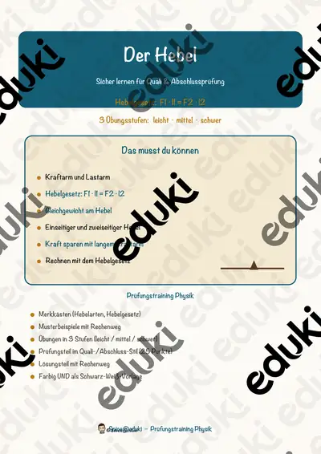
Der Hebel – Prüfungstraining Physik (Klasse 8)
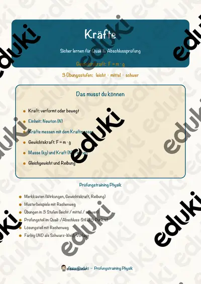
Kräfte – Prüfungstraining Physik (Klasse 8)
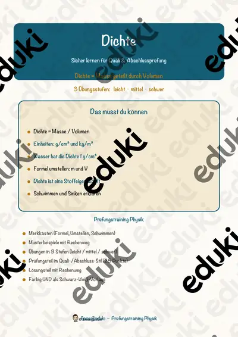
Dichte – Prüfungstraining Physik (Klasse 8)

Magnetismus – Prüfungstraining Physik (Klasse 8)
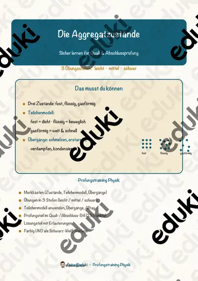
Die Aggregatzustände – Prüfungstraining Physik (Klasse 8)
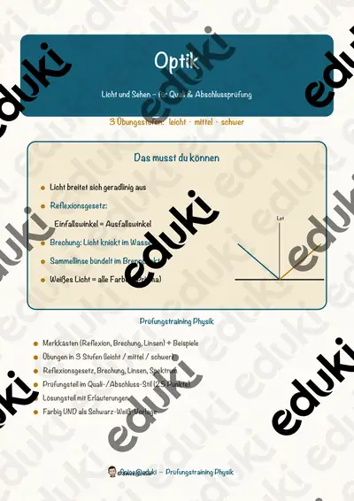
Optik – Licht und Sehen – Prüfungstraining Physik (Klasse 8)

Atomenergie Lückentext mit Wortspeicher Hörverstehen und Suchsel
Keine Materialien gefunden – versuch einen anderen Suchbegriff oder Filter.